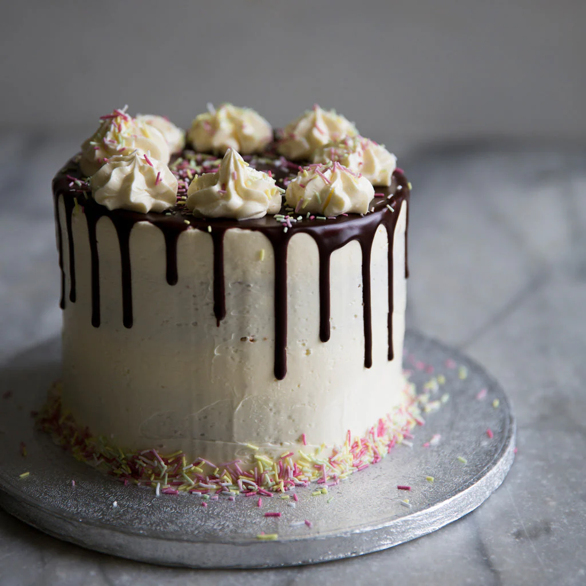

Your average birthday cake!

The most perfect desert to start the new year of your life, has been used as the primary desert for birthdays for centuries!
"Let the eat Cake" - Marie Antoinette, Queen of France (i think)
The most average looking cake coming right up!
-
2 cups white sugar
-
1 ¾ cups all-purpose flour
-
¾ cup unsweetened cocoa powder
-
1 ½ teaspoons baking soda
-
1 ½ teaspoons baking powder
-
1 teaspoon salt
-
2 large eggs
-
1 cup milk
-
½ cup vegetable oil
-
2 teaspoons vanilla extract
-
1 cup boiling water
Preheat the oven to 350 degrees F (175 degrees C). Grease and flour two 9-inch round cake pans.
Make cake: Stir together sugar, flour, cocoa, baking soda, baking powder, and salt in a bowl.
Add eggs, milk, oil, and vanilla; mix for 3 minutes with an electric mixer. Stir in boiling water by hand.
Pour evenly into the prepared pans.
Bake in the preheated oven until a toothpick inserted into the centers comes out clean, 30 to 35 minutes. Cool for 10 minutes before removing from pans to cool completely.
While cakes cool, make frosting: Cream butter with an electric mixer until light and fluffy. Stir in confectioners' sugar and cocoa alternately with milk and vanilla. Beat to a smooth spreading consistency.
Split the layers of the cooled cake horizontally, cover the top of each layer with frosting, then stack them onto a serving plate.
Frost the outside of the cake with remaining frosting.
To return home click home